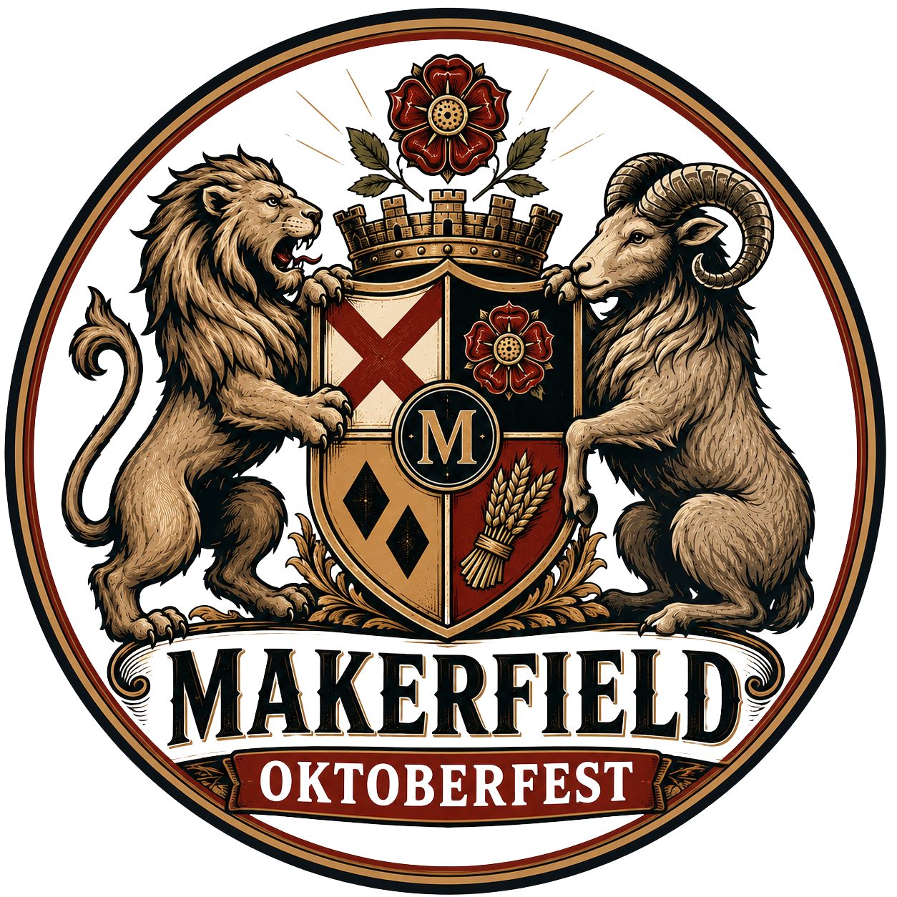

German beer poured properly, local craft ale and cider, hot street food and live music — two days of it, right here in Ashton. Every penny of profit goes to good causes.
Märzen, Helles and wheat beer on tap, poured into a glass that’s yours to take home.
For anyone who’d rather stay closer to home. Brewed within striking distance of Ashton.
Bratwurst, currywurst and pretzels, served through the afternoon and into the evening.
[Act to be confirmed] — playing both evenings.
Come down early with the family, or come later for the big one. Under-18s are welcome free of charge until 8.30pm, accompanied by an adult — from 8.30pm the festival is over-18s only.
Every ticket includes entry and a Makerfield Oktoberfest glass to keep.
Entry for one day, plus your festival glass. Buy drinks and food on the day.
Entry on both Friday and Saturday, plus your festival glass.
Entry for one day, your glass, and £10 of drinks tokens ready and waiting. Straight to the bar — no queuing at the token stand.
Best for one big dayEntry on both days, your glass, and £10 of drinks tokens ready and waiting.
Best valueExtra tokens can be bought at the token stand throughout the festival. Under-18s go free before 8.30pm but still need a free ticket, so we know how many to expect.
Challenge 25 is in operation. If you look under 25, please bring ID — no ID, no service, no exceptions.
Welcome free of charge until 8.30pm when accompanied by an adult. From 8.30pm the festival is over-18s only.
Tickets are non-refundable.
We reserve the right to refuse entry, or to ask anyone to leave.
Put your name on the bar, in front of a room full of local people, and behind a good cause at the same time.
Your name on the barrel and on the festival board.
Your name on the optic and on the festival board.
Tell us what you’d like and we’ll put a package together.
Makerfield Oktoberfest is run by the Rotary Club of Newton-le-Willows, and every penny of profit goes to good causes.
Have a brilliant day, and do a bit of good while you’re at it.
Registered Charity number: 1036332